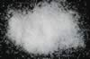

|
DOCUMENTATION_FORMAT: MINERAL
SAMPLE_ID: HS143.1B, HS143.2B, HS143.3B, HS143.4B, HS143.6
MINERAL_TYPE: Tectosilicate
MINERAL: Oligoclase (Plagioclase, Feldspar group)
FORMULA: (Na,Ca)Al(Al,Si)Si2O8
FORMULA_HTML: (Na,Ca)Al(Al,Si)Si2O8
COLLECTION_LOCALITY: Norway
ORIGINAL_DONOR: Hunt and Salisbury Collection
CURRENT_SAMPLE_LOCATION: USGS Denver Spectroscopy Laboratory
ULTIMATE_SAMPLE_LOCATION: USGS Denver Spectroscopy Laboratory
SAMPLE_DESCRIPTION:
Most analyses contain small amounts of Na, but a complete solid solution series is possible from orthoclase toward intermediate albite. Crystallizes at intermediate temperatures and has a partially ordered Al-Si distribution.
Grain size fractions are indicated by the extension after the sample number:
.1B = <5 µm
.2B = <74 µm
.3B = 74-250 µm
.4B = 250-1200 µm
.6 = cut slab
IMAGE_OF_SAMPLE:

END_SAMPLE_DESCRIPTION.
XRD_ANALYSIS:
Albite + microcline (s) (Norma Vergo)
END_XRD_ANALYSIS.
COMPOSITIONAL_ANALYSIS_TYPE: None # XRF, EPMA, ICP(Trace), WChem
COMPOSITION_TRACE:
COMPOSITION_DISCUSSION:
No compositional analyses.
END_COMPOSITION_DISCUSSION.
MICROSCOPIC_EXAMINATION:
END_MICROSCOPIC_EXAMINATION.
SPECTROSCOPIC_DISCUSSION:
Presence of a 2.2 micron absorption indicates likely mica contamination. There is also a 0.7 micron peak in the spectrum of sample HS143.2Bdue to stray light from a fluorescent lamp. G. Swayze.
END_SPECTROSCOPIC_DISCUSSION.
SPECTRAL_PURITY: 1b2_3_4_ # HS143.1B # 1= 0.2-3, 2= 1.5-6, 3= 6-25, 4= 20-150 microns
SPECTRAL_PURITY: 1c2_3_4_ # HS143.2B # 1= 0.2-3, 2= 1.5-6, 3= 6-25, 4= 20-150 microns
SPECTRAL_PURITY: 1c2c3c4_ # HS143.3B # 1= 0.2-3, 2= 1.5-6, 3= 6-25, 4= 20-150 microns
SPECTRAL_PURITY: 1c2_3_4_ # HS143.4B # 1= 0.2-3, 2= 1.5-6, 3= 6-25, 4= 20-150 microns
SPECTRAL_PURITY: 1d2_3_4_ # HS143.6 # 1= 0.2-3, 2= 1.5-6, 3= 6-25, 4= 20-150 microns
{kind=link}